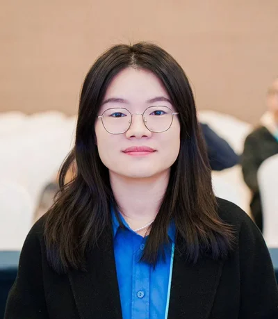

Community Policies and Contribution Practices
AI-use policies, disclosure requirements, contribution acceptance rules, and stakeholder involvement in rule-making.
THE 1ST INTERNATIONAL WORKSHOP ON
ComGovAI 2027 · Proposed for FSE 2027 · Shenzhen, China
Proposed for FSE 2027; acceptance has not been confirmed. Submissions are not yet open. The program and dates are provisional, subject to acceptance.
Software communities coordinate contributions through policies, informal norms, technical workflows, and stakeholder decisions. Software community governance encompasses the rules, roles, decision processes, and enforcement mechanisms that shape participation, contribution evaluation, authority, and responsibility.
AI-assisted contributions and autonomous agents introduce new questions about disclosure, verification, accountability, and the allocation of review work. ComGovAI connects these challenges with software engineering tools and workflows, examining how disclosure requirements affect transparency and contributor behavior, and how agent permissions and approval processes relate to accountability, auditability, and maintainer workload. This focus brings empirical studies of community practices into dialogue with the design of governance mechanisms and interventions.
The workshop brings together researchers in software communities and empirical software engineering, alongside maintainers, contributors, and community managers, with three goals:
02 / TOPICS OF INTEREST
We welcome evidence, methods, tools, and practical experiences that help communities govern participation, contributions, and collective decisions.
AI-use policies, disclosure requirements, contribution acceptance rules, and stakeholder involvement in rule-making.
Effects of AI contribution policies on newcomer participation and retention; attribution and recognition of human effort in AI-assisted contributions, including non-code work.
Authority and permissions for contributors, maintainers, bots, and agents; human oversight, accountability, escalation procedures, and dispute resolution.
Trust in AI-assisted contributions and automated governance; traceability of AI-generated contributions and explainability of AI-supported decisions; fairness in contribution evaluation and policy enforcement.
Effects of AI-assisted contributions on review and maintenance workloads; workload distribution, contribution management, maintainer succession, and long-term community sustainability.
Policy-aware assistants, automated compliance checks, AI-supported governance decisions, community analytics, and methods for evaluating governance mechanisms.
Submissions should establish a clear connection to software community governance through community practices, governance decisions, or supporting tools. Empirical studies need not evaluate an existing policy or propose an intervention. Technical contributions should support an identifiable governance function. AI need not be part of the research method.
03 / PLANNED CALL FOR PAPERS
Final author instructions and a submission link will be announced if the workshop is accepted.
Follow the applicable FSE 2027 ACM format. State your contribution type and explain its relevance to software community governance.
Selection will consider relevance to community governance, clarity of the problem, originality of the insight or position, appropriateness of the evidence or argument, and potential to stimulate discussion. Program chairs will manage conflicts of interest; conflicted reviewers and chairs will not participate in decisions.
We intend to publish accepted extended abstracts in the ACM Digital Library through FSE’s proceedings arrangements. FSE’s call identifies extended abstracts of up to five pages as exempt from APCs.
At least one author must register and present in person, subject to FSE’s emergency provisions. Attendance is open to all registered participants, including those without an accepted paper, with no additional selection process.
Work focused solely on individual tool performance, generic agent coordination, or organizational AI adoption is outside scope unless a clear connection to software community governance is established.
Organizers and their directly supervised students, postdocs, and employees may not submit papers to this workshop.
As a published ACM author, you and your co-authors are subject to all ACM Publications Policies, including ACM’s new Publications Policy on Research Involving Human Participants and Subjects.
04 / THE CONVERSATION
The proposed full-day, in-person program combines an invited talk, two thematic paper sessions, and moderated discussions. Every accepted extended abstract receives an oral presentation slot; tool demonstrations may be included within that slot. Session themes will follow the accepted submissions rather than fixed tracks.
Welcome and introduction
A research or practitioner perspective, followed by questions. Speaker to be announced.
Paper presentations, including tool demonstrations where applicable, followed by moderated discussion.
Informal exchange among participants.
Paper presentations and moderated discussion connecting findings and comparing approaches.
Governance implications, open research questions, and opportunities for collaboration.
Beyond the workshop: planned proceedings and a concise public summary of findings, governance implications, and research priorities, prepared with contributors’ consent and attribution.
05 / ORGANIZING TEAM
The proposed organizing team connects research on software communities with empirical methods and intelligent support for collaboration.
Main Contact · Proposed General Co-chair
School of Computer Science and Engineering
Beihang University, China

Proposed General Co-chair
School of Computer Science and Technology
Beijing Institute of Technology, China
Proposed General Co-chair
School of Computer Science and Information Technology
University College Cork, Ireland
Proposed Co-organizer
School of Informatics, Computing and Cyber Systems
Northern Arizona University, USA
LET’S START A CONVERSATION
Contact Xin Tan about the proposed workshop.